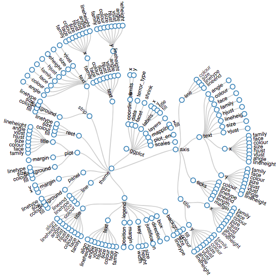

Einführung in Computational Social Science mit R
Course Description
Dies ist ein 5 Stunden Einführungsworkshop für Sozialwissenschaftler der für die Uni Stuttgart 9.11.2018 konzipiert wurde.
Dieser anwendungsorientierte Workshop für Sozialwissenschaftler ist konzipiert für Personen mit wenig Programmiererfahrung mit der Statistik-Software R. Gemeinsam bearbeiten wir den PIRUS Datensatz, welcher Informationen auf individueller Ebene zu Hintergründen, Attributen und Radikalisierungsprozessen von über 1.800 politischen Extremisten in den USA beinhaltet. Ziel des Workshop ist, dass die Studierenden selbst eine Analyse in R durchgeführt haben um danach eigene Fragestellungen untersuchen zu können. Dazu werden wir sowohl moderne Tools zur Datenverarbeitung und Visualisierung benutzen, als auch erste statistische Modelle implementieren. Statistische Vorkenntnisse sind zwar von Vorteil, müssen aber nicht vorhanden sein. Der Workshop findet am 09.11.2018 von 9-16 Uhr im CIP Pool der Breitscheidtstraße (Politikwissenschaft) statt.
Wenn euer Interesse geweckt ist, meldet euch bitte unter folgendem Link an damit ihr auf die Kursmaterialien zugreifen könnt:
Alle weiteren Informationen findet ihr in unserer Facebook-Gruppe: https://www.facebook.com/groups/rstuttgart/
Wir freuen uns auf euer Erscheinen,
die R User Group Stuttgart
Tools


Packages


Not covered in this Workshop


Workflow

- Import data into R: read_csv(), readLines(), read_delim()
- Tidy data - variables per column, observation by row
- Tranform with dplyr
- Visualize with ggplot2
(Wickham and Grolemund, 2017)
Grundlagen
Zunächst einmal die Basics zu Rmarkdown.
Das ist ein Chunk:
print("Hello World!")## [1] "Hello World!"Klick doch einfach mal auf den grünen “Play” Button.
R als Taschenrechner
+addieren-subtrahieren*multiplizieren/dividieren^exponieren
Aufgaben:
34+77
(500 geteilt durch 125) plus 3 mal 6 hoch 2
Berechne die Differenz zwischen 2018 und dem Jahr, an dem du begonnen hast zu studieren und dividiere das durch die Differenz zwischen 2018 und dem Jahr, in dem du geboren wurdest. Multipliziere dies mit 100, um den Prozentsatz deines Lebens zu erhalten, den du an die Uni verbracht hast.
Objekte und Zuweisung
In R kann man je nach Rechenleistung zehntausende Datensätze auf einmal laden und verarbeiten. Das wird möglich da jeder Datensatz seinen eigenen Namen besitzt. Dieser muss mit einem Buchstaben beginnen, kann aber durchaus auch . oder _ oder Zahlen enthalten. Um einem Objekt einen Namen zuzuweisen wird das Zeichen <- (Zuweisungspfeil) eingesetzt. Objekte können einzelne Zahlen, Variablen oder auch Datensätze sein. Mit den Objektennamen können Daten jeglicher Art abgespeichert und abgerufen werden.
Führe einfach mal den folgenden Chunk aus!
x <- 2 #definiere x als 1
x## [1] 2Aufgaben:
- Erstelle ein neues Objekt y mit deiner Lieblingszahl. Addiere x und y und speichere das Ergebnis in z. Gebe z aus!
Wichtige Operatoren
Boolean
&(logisch) und|(logisch) oder!(logisch) nicht
Weitere Operatoren
==(logisch) ist gleich!=(logisch) ist ungleich%in%Vektor ist gleich>größer als<kleiner als>=größer gleich<=kleiner gleichis.na()ist gleich NA (fehlender Wert)!is.na()ist ungleich NA
Beispiele
3 == 3 #ist 3 gleich 3?## [1] TRUE4 > 5 #ist 4 größer als 5?## [1] FALSE"albert" == "albert" #ist albert gleich albert vor?## [1] TRUER gibt hier entweder TRUE oder FALSE aus, abhängig davon ob der benutzte logische Operator zutrifft oder nicht.
Vektoren I
Vektoren in R sind einfach mehrere Werte die aneinander gebunden werden. Diese können Zahlen aber auch strings (Buchstabenfolgen) sein. Hilfreich dabei ist die c() Funktion (c steht für concatenate = verketten auf Deutsch).
Beispiele:
c(4, 1, 3, 4, 8)## [1] 4 1 3 4 8vektor <- c(4, 1, 3, 4, 8) #definiere Vektor mit den Werten 4, 1, 3, 4 und 8
vektor## [1] 4 1 3 4 8Operatoren können auch ganz einfach mit Vektoren angewandt werden.
vektor * vektor #vektor mit sich selbst mal nehmen## [1] 16 1 9 16 64vektor == vektor #sind alle Werte von vektor gleich alle Werte von vektor?## [1] TRUE TRUE TRUE TRUE TRUEvektor %in% c(4, 8) #kommen 4 oder 8 in vektor vor?## [1] TRUE FALSE FALSE TRUE TRUEAufgabe
- Bilde einen Vektor mit dem Namen
cmund den folgenden Größen in Zentimeter:
190152174
Teile dann cm durch Hundert um die Größen in Meter zu erhalten!
Wollen wir auf einen bestimmten Wert in unserem Vektor zugreifen, dann benutzen wir eckige Klammern [...] auf die folgende Art und Weise:
vektor ## [1] 4 1 3 4 8vektor[3] #gibt uns das dritte Element von vektor aus## [1] 3vektor[5] #gibt uns das fünfte Element von vektor aus## [1] 8vektor[1] / vektor[4] #teile die erste Stelle von vektor durch die fünfte Stelle von vektor## [1] 1Funktionen
Das Ziel einer Funktion ist es Daten zu verarbeiten. Dazu gibt es einen input und einen output.
Definieren wir doch mal eine Funktion, welche Werte die man als input eingibt wieder quadriert als output gibt. Dazu benutzen wir function() und bestimmen dabei die Argumente welche wir jeweils eintippen wollen. Die Funktion selber wird in geschweiften Klammern {} codiert.
Beispiele:
quadrieren <- function(input) {
output <- input^2 #nehme den input hoch 2 und speichere ihn in output
return(output) #gebe output aus
}
#Funktion ausprobieren!
quadrieren(9) ## [1] 81Wir können auch zwei oder mehrere Argumente zu einer Funktion hinzufügen. Probieren wir das gleiche doch mal mit einer Funktion die jeder aus dem Physik - Unterricht kennen sollte:
Distanz = Geschwindigkeit * Zeit
\[Distanz = Geschwindigkeit \times Zeit\]
bzw.
\[s = v * t\]
s = v * t
distanz <- function(v, t) {
s <- v * t #v mal t und definiere deren Ergebnis als s
s #gebe s aus
}
#Funktion ausprobieren!
distanz(v = 50, t = 6)## [1] 300Nun müssen wir allerdings nicht immer selber Funktionen definieren. Im Gegenteil! Base R und die vielen Packages haben unzählige Funktionen, die Datenverarbeitung einfach machen. Beispielsweise gibt mean() den Mittelwert eines Vektors aus und sd() gibt die Standardabweichung.
vektor2 <- 1:5
mean(vektor2) #gib den Mittelwert von vektor aus## [1] 3sd(vektor2) #gib die Standardabweichung von vektor aus## [1] 1.581139Vektoren II
Nun eine kleine Übersicht über die Arten von Vektoren:
Es gibt drei Hauptgruppen
- Character: aka “String” oder ‘String’, ist einfach nur Text.
char <- c("Männlich", "Weiblich")
class(char)## [1] "character"- Factor: Factors können eine Reihenfolge haben sogennante Levels.
fac <- factor(c("Männlich", "Weiblich"))
class(fac)## [1] "factor"- Numeric: Jeglicher Zahleninput mit dem man rechnen kann.
num <- c(1, 2, 3)
class(num)## [1] "numeric"Transformation zwischen den Datentypen
as.character()
as.character(num)## [1] "1" "2" "3"as.factor()
as.factor(char)## [1] Männlich Weiblich
## Levels: Männlich Weiblichas.numeric()
as.numeric(fac)## [1] 1 2Dataframes
Die meiste Zeit werden wir in R nicht mit Vektoren arbeiten, sondern mit dataframes. Dataframes sind letztendlich einfach nur angeordnete Vektoren und essentiell wichtig für die Datenanalyse.
Lasst uns mal einen Beispieldatensatz einladen.
Profiles of Individual Radicalization in the United States (PIRUS)
Profiles of Individual Radicalization in the United States (PIRUS) ist eine Datenbank mit 1.867 islamistischen, extrem linken und extrem rechten Extremisten, die von 1948 bis 2016 zu gewalttätigem und gewaltfreiem Extremismus in den Vereinigten Staaten radikalisiert haben. Die Datenbank steht auf der START-Webseite kostenlos zum Download zur Verfügung.
Zunächst laden wir den Datensatz ein
load("start_pirus.Rdata")Hier ein kleiner Ausschnitt aus dem Datensatz:
start_pirusCodebook
| Variablen | Beschreibung |
|---|---|
| subject_id | ID der Person |
| date | Datum |
| age | Alter |
| male | Geschlecht (weiblich/männlich) |
| student | Student (0/1) |
| married | Verheiratet (0/1) |
| unemployed | Arbeitslos (0/1) |
| mental | Mentale Probleme (0/1) |
| abuse_child | Als Kind misshandelt (0/1) |
| crime_history | Kriminelle Vergangenheit (0/1) |
| violent | Gewalttätiger Plan (0/1) |
| extent | Fortgeschrittenheit Planung (0-5) |
| terror_group | Gruppe |
| radicalization | Wie stark überzeugt? (1-5) |
| clique | Extremistische Clique (0/1) |
| terror_type | Ideologie |
Eine Sache fällt dir vielleicht auch auf: das Kürzel NA steht für Not Available und symbolisiert missing values oder fehlende Werte.
Datenzugriff
Sehr angenehm kann man auf einzelne Variablen mit Hilfe des Dollarzeichens in der Form data$variable zugegriffen werden.
head(start_pirus$terror_group) #zeige die ersten 5 Stellen von terror_groupstart_pirus$terror_group[1] #zeige die erste Stelle von terror_group## [1] "al-Qaeda core"start_pirus$terror_group[250] #zeige die 250. Stelle von terror_group## [1] "Animal Liberation Front (ALF)"Mean
mean(start_pirus$age, na.rm = T)## [1] 33.61223Aufgabe
Benutze die folgenden Funktionen mit der Variable Alter:
min()max()sd()hist()
Summary
summary(start_pirus)## subject_id date age male
## Min. :1000 Min. :1948-07-20 Min. :15.00 Min. :0.0000
## 1st Qu.:3550 1st Qu.:1985-04-15 1st Qu.:24.00 1st Qu.:1.0000
## Median :4562 Median :2002-01-05 Median :30.00 Median :1.0000
## Mean :4575 Mean :1997-08-07 Mean :33.61 Mean :0.9024
## 3rd Qu.:5827 3rd Qu.:2010-10-28 3rd Qu.:41.00 3rd Qu.:1.0000
## Max. :9411 Max. :2016-12-23 Max. :88.00 Max. :1.0000
## NA's :83
## gender married student unemployed
## Min. :1.000 Min. :0.0000 Min. :0.0000 Min. :0.000
## 1st Qu.:2.000 1st Qu.:0.0000 1st Qu.:0.0000 1st Qu.:0.000
## Median :2.000 Median :0.0000 Median :0.0000 Median :0.000
## Mean :1.902 Mean :0.3965 Mean :0.2453 Mean :0.104
## 3rd Qu.:2.000 3rd Qu.:1.0000 3rd Qu.:0.0000 3rd Qu.:0.000
## Max. :2.000 Max. :1.0000 Max. :1.0000 Max. :1.000
## NA's :788 NA's :805
## mental abuse_child crime_history violent
## Min. :0.0000 Min. :0.00000 None :611 Min. :0.0000
## 1st Qu.:0.0000 1st Qu.:0.00000 Non-Violent:205 1st Qu.:0.0000
## Median :0.0000 Median :0.00000 Violent :195 Median :1.0000
## Mean :0.1019 Mean :0.05684 NA's :854 Mean :0.5898
## 3rd Qu.:0.0000 3rd Qu.:0.00000 3rd Qu.:1.0000
## Max. :1.0000 Max. :3.00000 Max. :1.0000
##
## extent terror_group radicalization clique
## Min. :0.000 Length:1865 Min. :0.000 Min. :0.0000
## 1st Qu.:0.000 Class :character 1st Qu.:3.000 1st Qu.:0.0000
## Median :1.000 Mode :character Median :5.000 Median :1.0000
## Mean :2.069 Mean :3.863 Mean :0.5179
## 3rd Qu.:5.000 3rd Qu.:5.000 3rd Qu.:1.0000
## Max. :5.000 Max. :5.000 Max. :1.0000
## NA's :27 NA's :193 NA's :664
## terror_type year
## Single Issue:340 Min. :1948
## Far Left :324 1st Qu.:1985
## Far Right :746 Median :2002
## Islamism :455 Mean :1997
## 3rd Qu.:2010
## Max. :2016
## Indexieren mit eckigen Klammern
Wollen wir auf verschiedene Reihen oder Spalten des dataframes zugreifen, können wir das in folgenderweise tun
start_pirus[1, ] #1. Reihe
start_pirus[, 2] #2. Spalte
start_pirus[1:10, 4] #die ersten 10 Reihen und die vierte SpalteAufgabe
Gib die Reihe 1000 von
start_pirusaus- Gib die Reihe 500 bis 600 und die erste Spalte von
start_pirusaus
Tidyverse
Neben Base R gibt es das Tidyverse, dass viele mächtige Packages enthält!
Hier eine kleine Übersicht von relevanten Funktionen, die wir brauchen werden:
| Bedeutung | tidyverse - Funktionen |
|---|---|
| Neue Variable erstellen | mutate() |
| Rekodieren (binär) | ifelse() |
| Rekodieren | case_when() |
| Variablen auswählen | select() |
| Subset erstellen | filter() |
| Variablennamen ändern | rename() |
| pipe operator | %>% |
| Datensatz gruppieren | group_by() |
| Zusammenfassen | summarize() |
| Zähle die Ausprägungen | count() |
Zunächst einmal müssen wir das Package installieren und laden. Das geht mit in Base R mit den folgenden zwei Befehlen: install.packages und library.
Eine viel enstpannteres Funktion, welche Packages gleichzeitig installiert und einlädt nennt sich pacman. Zunächsten installieren wir es:
# install.packages("pacman")Wir laden dann alle packages die wir brauchen auf folgende Weise:
pacman::p_load(tidyverse)Wenn man ein Package nicht laden will sondern nur eine Funktion daraus, dann kann man auch zwei Doppelpunkte :: hinter den Packagenamen schreiben und die nötige Funktion danach denotieren.
Let’s get it started!
Wieder zu den Beispieldaten:
load("start_pirus.Rdata")mutate
Neue Variablen erstellen mit mutate()
Mit mutate() wird/werden eine oder mehrere neue Variable(n) erzeugt und an den Datensatz hinten angefügt.
Beispiel
Statt dem Alter wollen wir nun das Geburstjahr haben. Einfacherweise ziehen wir das jetzige Jahr (2018) vom Alter ab um das Geburtsjahr zu erhalten. Die neue Variable nennen wir birth.
mutate(start_pirus, birth = 2018 - age)## # A tibble: 1,865 x 19
## subject_id date age male gender married student unemployed
## <dbl> <date> <dbl> <dbl> <dbl> <dbl> <dbl> <dbl>
## 1 1000 2002-05-08 32 1 2 1 1 0
## 2 1001 2001-11-25 20 1 2 0 1 0
## 3 1002 1997-05-01 28 1 2 1 0 0
## 4 1005 1993-04-10 25 1 2 1 0 0
## 5 1006 1993-03-04 25 1 2 0 0 0
## 6 1010 2003-03-01 27 1 2 1 0 0
## 7 1013 2002-09-10 23 1 2 1 0 1
## 8 1014 2002-09-15 28 1 2 1 0 0
## 9 1015 2002-10-21 26 1 2 1 0 0
## 10 1016 2002-09-18 25 1 2 1 0 0
## # ... with 1,855 more rows, and 11 more variables: mental <dbl>,
## # abuse_child <dbl>, crime_history <fct>, violent <dbl>, extent <dbl>,
## # terror_group <chr>, radicalization <dbl>, clique <dbl>,
## # terror_type <fct>, year <dbl>, birth <dbl>Weisen wir den Datensatz wieder start_pirus zu, so wird unsere Veränderung auch im Objekt festgehalten
start_pirus <- mutate(start_pirus, birth = 2018 - age)
start_pirus## # A tibble: 1,865 x 19
## subject_id date age male gender married student unemployed
## <dbl> <date> <dbl> <dbl> <dbl> <dbl> <dbl> <dbl>
## 1 1000 2002-05-08 32 1 2 1 1 0
## 2 1001 2001-11-25 20 1 2 0 1 0
## 3 1002 1997-05-01 28 1 2 1 0 0
## 4 1005 1993-04-10 25 1 2 1 0 0
## 5 1006 1993-03-04 25 1 2 0 0 0
## 6 1010 2003-03-01 27 1 2 1 0 0
## 7 1013 2002-09-10 23 1 2 1 0 1
## 8 1014 2002-09-15 28 1 2 1 0 0
## 9 1015 2002-10-21 26 1 2 1 0 0
## 10 1016 2002-09-18 25 1 2 1 0 0
## # ... with 1,855 more rows, and 11 more variables: mental <dbl>,
## # abuse_child <dbl>, crime_history <fct>, violent <dbl>, extent <dbl>,
## # terror_group <chr>, radicalization <dbl>, clique <dbl>,
## # terror_type <fct>, year <dbl>, birth <dbl>Aufgabe
Der Radikalisierungsindikator (radicalization) geht von 1 - 5. Z-standardisiere die variable mit scale() und speichere sie als radicalization_z ab. Mit mutate() wird die Variable hinten angehangen.
ifelse
Die Funktion ifelse() testet eine logische Bedingung in ihrem ersten Argument. Wenn der Test TRUE ist, gibt ifelse() das zweite Argument zurück. Wenn der Test FALSE ist, gibt ifelse() das dritte Argument zurück.
Also in folgender Form:
ifelse(logischer Test, was passiert wenn zutrifft, was passiert wenn nicht zutrifft)
Das können wir in Kombination mit mutate benutzen.
Beispiel:
Nehmen wir an, dass wir die Altervariable als eine dummy Variable (zwei Ausprägungen) benutzen wollen. Am besten geht das mit ifelse(). Kodieren wir doch einmal die 18-40 Jährigen als eine Gruppe und über 40 Jährige als eine andere Gruppe.
Eine Variable u40 erstellen welche die 18 bis 40 Jährigen und die über 40 Jährigen in eine Gruppe teilt.
mutate(start_pirus, u40 = ifelse(age <= 40, "younger" ,"older"))## # A tibble: 1,865 x 20
## subject_id date age male gender married student unemployed
## <dbl> <date> <dbl> <dbl> <dbl> <dbl> <dbl> <dbl>
## 1 1000 2002-05-08 32 1 2 1 1 0
## 2 1001 2001-11-25 20 1 2 0 1 0
## 3 1002 1997-05-01 28 1 2 1 0 0
## 4 1005 1993-04-10 25 1 2 1 0 0
## 5 1006 1993-03-04 25 1 2 0 0 0
## 6 1010 2003-03-01 27 1 2 1 0 0
## 7 1013 2002-09-10 23 1 2 1 0 1
## 8 1014 2002-09-15 28 1 2 1 0 0
## 9 1015 2002-10-21 26 1 2 1 0 0
## 10 1016 2002-09-18 25 1 2 1 0 0
## # ... with 1,855 more rows, and 12 more variables: mental <dbl>,
## # abuse_child <dbl>, crime_history <fct>, violent <dbl>, extent <dbl>,
## # terror_group <chr>, radicalization <dbl>, clique <dbl>,
## # terror_type <fct>, year <dbl>, birth <dbl>, u40 <chr>#darauf achten, dass bei strings ('Wörtern') Anführungsstriche gemacht werden müssen!Aufgabe
- Kodiere
malein der folgenden Art und Weise und nenne die Variablemale_label:
1 = “männlich” 2 = “weiblich”
Überschreibe start_pirus zeige den Datensatz!
start_pirus <- mutate(start_pirus, male_label = ifelse(male == 1, "male" ,"female"))
#darauf achten, dass bei strings ('Wörtern') Anführungsstriche gemacht werden müssen!
start_pirus ## # A tibble: 1,865 x 20
## subject_id date age male gender married student unemployed
## <dbl> <date> <dbl> <dbl> <dbl> <dbl> <dbl> <dbl>
## 1 1000 2002-05-08 32 1 2 1 1 0
## 2 1001 2001-11-25 20 1 2 0 1 0
## 3 1002 1997-05-01 28 1 2 1 0 0
## 4 1005 1993-04-10 25 1 2 1 0 0
## 5 1006 1993-03-04 25 1 2 0 0 0
## 6 1010 2003-03-01 27 1 2 1 0 0
## 7 1013 2002-09-10 23 1 2 1 0 1
## 8 1014 2002-09-15 28 1 2 1 0 0
## 9 1015 2002-10-21 26 1 2 1 0 0
## 10 1016 2002-09-18 25 1 2 1 0 0
## # ... with 1,855 more rows, and 12 more variables: mental <dbl>,
## # abuse_child <dbl>, crime_history <fct>, violent <dbl>, extent <dbl>,
## # terror_group <chr>, radicalization <dbl>, clique <dbl>,
## # terror_type <fct>, year <dbl>, birth <dbl>, male_label <chr>case_when
Was aber wenn wir mehrere Werte rekodieren wollen? Enter the world of case_when.
Mit case_when können wir einzelne Variablen rekodieren und sogar Bedingungen nach Lust und Laune mixen. Hier ein Beispiel:
Variable Description: Prior to their radicalization, does the individual have a history of involvement in non-ideologically motivated criminal activities?
- 0 = No previous criminal activity
- 1 = Previous (non-violent) minor criminal activity (e.g., convicted of a misdemeanor crime)
- 2 = Previous (non-violent) serious criminal activity (e.g., convicted of a felony crime)
- 3 = Previous violent crime
start_pirus <- mutate(start_pirus, crime_history = case_when(
crime_history == 0 ~ "None",
crime_history == 1 ~ "Non-Violent",
crime_history == 2 ~ "Non-Violent",
crime_history == 3 ~ "Violent"
))
start_pirus## # A tibble: 1,865 x 20
## subject_id date age male gender married student unemployed
## <dbl> <date> <dbl> <dbl> <dbl> <dbl> <dbl> <dbl>
## 1 1000 2002-05-08 32 1 2 1 1 0
## 2 1001 2001-11-25 20 1 2 0 1 0
## 3 1002 1997-05-01 28 1 2 1 0 0
## 4 1005 1993-04-10 25 1 2 1 0 0
## 5 1006 1993-03-04 25 1 2 0 0 0
## 6 1010 2003-03-01 27 1 2 1 0 0
## 7 1013 2002-09-10 23 1 2 1 0 1
## 8 1014 2002-09-15 28 1 2 1 0 0
## 9 1015 2002-10-21 26 1 2 1 0 0
## 10 1016 2002-09-18 25 1 2 1 0 0
## # ... with 1,855 more rows, and 12 more variables: mental <dbl>,
## # abuse_child <dbl>, crime_history <chr>, violent <dbl>, extent <dbl>,
## # terror_group <chr>, radicalization <dbl>, clique <dbl>,
## # terror_type <fct>, year <dbl>, birth <dbl>, male_label <chr>Jede Bedingung untereinander gereiht und mit einem Komma getrennt. Wenn eine Bedingung ein TRUE Statement ist, dann wird mit dem ~ Operator der entsprechende Wert zugewiesen. Gibt man TRUE selbst an, so kann man “alle anderen” Ausprägungen, die nicht vorher abgefragt worden sind einen Wert zuweisen. Gibt man die Originalvariable an, so bleiben die restlichen Werte wie sie sind.
select
Mit select werden Spalten (=Vektoren/Variablen) mittels dem Variablennamen oder einer Hilfsfunktion ausgewählt.
Wählen wir wieder nur die zwei folgenden Variables aus:
agegender
select(start_pirus , age, gender)## # A tibble: 1,865 x 2
## age gender
## <dbl> <dbl>
## 1 32 2
## 2 20 2
## 3 28 2
## 4 25 2
## 5 25 2
## 6 27 2
## 7 23 2
## 8 28 2
## 9 26 2
## 10 25 2
## # ... with 1,855 more rowsSelect eignet sich auch dafür Variablen aus einem bestehenden dataframe zu entfernen. Dies ist ganz einfach zu lösen mit einem - (Minus).
select(start_pirus , -age, -gender)## # A tibble: 1,865 x 18
## subject_id date male married student unemployed mental
## <dbl> <date> <dbl> <dbl> <dbl> <dbl> <dbl>
## 1 1000 2002-05-08 1 1 1 0 0
## 2 1001 2001-11-25 1 0 1 0 0
## 3 1002 1997-05-01 1 1 0 0 0
## 4 1005 1993-04-10 1 1 0 0 0
## 5 1006 1993-03-04 1 0 0 0 0
## 6 1010 2003-03-01 1 1 0 0 0
## 7 1013 2002-09-10 1 1 0 1 0
## 8 1014 2002-09-15 1 1 0 0 0
## 9 1015 2002-10-21 1 1 0 0 0
## 10 1016 2002-09-18 1 1 0 0 0
## # ... with 1,855 more rows, and 11 more variables: abuse_child <dbl>,
## # crime_history <chr>, violent <dbl>, extent <dbl>, terror_group <chr>,
## # radicalization <dbl>, clique <dbl>, terror_type <fct>, year <dbl>,
## # birth <dbl>, male_label <chr>Aufgaben
- Wähle die folgende Variablen aus:
terror_groupterror_typecrime_history
- Wähle alle Variablen außer
studentundage.
select(start_pirus , terror_group, terror_type, crime_history)## # A tibble: 1,865 x 3
## terror_group terror_type crime_history
## <chr> <fct> <chr>
## 1 al-Qaeda core Islamism <NA>
## 2 Taliban Islamism <NA>
## 3 al-Qaeda core Islamism <NA>
## 4 <NA> Islamism <NA>
## 5 <NA> Islamism <NA>
## 6 al-Qaeda core Islamism <NA>
## 7 al-Qaeda core Islamism <NA>
## 8 al-Qaeda core Islamism <NA>
## 9 al-Qaeda core Islamism <NA>
## 10 al-Qaeda core Islamism <NA>
## # ... with 1,855 more rowsselect(start_pirus , -student, -age)## # A tibble: 1,865 x 18
## subject_id date male gender married unemployed mental
## <dbl> <date> <dbl> <dbl> <dbl> <dbl> <dbl>
## 1 1000 2002-05-08 1 2 1 0 0
## 2 1001 2001-11-25 1 2 0 0 0
## 3 1002 1997-05-01 1 2 1 0 0
## 4 1005 1993-04-10 1 2 1 0 0
## 5 1006 1993-03-04 1 2 0 0 0
## 6 1010 2003-03-01 1 2 1 0 0
## 7 1013 2002-09-10 1 2 1 1 0
## 8 1014 2002-09-15 1 2 1 0 0
## 9 1015 2002-10-21 1 2 1 0 0
## 10 1016 2002-09-18 1 2 1 0 0
## # ... with 1,855 more rows, and 11 more variables: abuse_child <dbl>,
## # crime_history <chr>, violent <dbl>, extent <dbl>, terror_group <chr>,
## # radicalization <dbl>, clique <dbl>, terror_type <fct>, year <dbl>,
## # birth <dbl>, male_label <chr>filter
Zeilen auswählen mit filter()
Mit filter() behält man oder selektiert man Zeilen eines Datensatzes, welche bestimmte logische Kriterien oder Konditionen erfüllen. Damit wird ein Subset (Untergruppe) gebildet. Wir wählen jetzt nur die Fälle aus, welche unser Kriterium erfüllen. Jetzt zeigen wir uns Personen an, welche zur Far Right gehören.
Beispiel:
filter(start_pirus, terror_type == "Far Right")Aufgaben
Filtere den Datensatz und zeige nur die Personen, welche sich mit der
Ku Klux Klanidentifizieren.Filtere den Datensatz und zeige nur die Personen, welche über 40 Jahre alt sind und eher erfolgreich waren (
extent > 3).Filtere den Datensatz und zeige nur weibliche Personen, welche eine gewalttätige kriminelle Vergangenheit hatten
criminal_history.
Hier nochmal die Operatoren zum spicken ;)
==(logisch) ist gleich!=(logisch) ist ungleich>größer als<kleiner als>=größer gleich<=kleiner gleich
rename
Variablen umbennen mit rename()
Mit rename() lassen sich die Variablen umbennen. Beispielhaft ?bersetzen wir terror_group, radicalization und terror_type Variablennamen ins Deutsche.
Beispiel:
rename(start_pirus, group = terror_group, rad = radicalization, ideology = terror_type)## # A tibble: 1,865 x 20
## subject_id date age male gender married student unemployed
## <dbl> <date> <dbl> <dbl> <dbl> <dbl> <dbl> <dbl>
## 1 1000 2002-05-08 32 1 2 1 1 0
## 2 1001 2001-11-25 20 1 2 0 1 0
## 3 1002 1997-05-01 28 1 2 1 0 0
## 4 1005 1993-04-10 25 1 2 1 0 0
## 5 1006 1993-03-04 25 1 2 0 0 0
## 6 1010 2003-03-01 27 1 2 1 0 0
## 7 1013 2002-09-10 23 1 2 1 0 1
## 8 1014 2002-09-15 28 1 2 1 0 0
## 9 1015 2002-10-21 26 1 2 1 0 0
## 10 1016 2002-09-18 25 1 2 1 0 0
## # ... with 1,855 more rows, and 12 more variables: mental <dbl>,
## # abuse_child <dbl>, crime_history <chr>, violent <dbl>, extent <dbl>,
## # group <chr>, rad <dbl>, clique <dbl>, ideology <fct>, year <dbl>,
## # birth <dbl>, male_label <chr>Ist eine Abkürzung des folgenden Code:
start_pirus2 <- rename(start_pirus, group = terror_group)
start_pirus2 <- rename(start_pirus2, rad = radicalization)
start_pirus2 <- rename(start_pirus2, ideology = terror_type)
start_pirus2## # A tibble: 1,865 x 20
## subject_id date age male gender married student unemployed
## <dbl> <date> <dbl> <dbl> <dbl> <dbl> <dbl> <dbl>
## 1 1000 2002-05-08 32 1 2 1 1 0
## 2 1001 2001-11-25 20 1 2 0 1 0
## 3 1002 1997-05-01 28 1 2 1 0 0
## 4 1005 1993-04-10 25 1 2 1 0 0
## 5 1006 1993-03-04 25 1 2 0 0 0
## 6 1010 2003-03-01 27 1 2 1 0 0
## 7 1013 2002-09-10 23 1 2 1 0 1
## 8 1014 2002-09-15 28 1 2 1 0 0
## 9 1015 2002-10-21 26 1 2 1 0 0
## 10 1016 2002-09-18 25 1 2 1 0 0
## # ... with 1,855 more rows, and 12 more variables: mental <dbl>,
## # abuse_child <dbl>, crime_history <chr>, violent <dbl>, extent <dbl>,
## # group <chr>, rad <dbl>, clique <dbl>, ideology <fct>, year <dbl>,
## # birth <dbl>, male_label <chr>So sparen wir uns da mehrmals abspeichern! Noch besser geht das aber mit der…
Pipe %>%
Mit der Hilfe von %>% können alle diese Operationen auf einmal ausgeführt werden!
[Prozent größer Prozent] wird pipe operator genannt. Diese Pipe ermöglicht es Daten einfacher, verständlicher und lesbarer und ohne Verlust von Flexibilität zu transformieren.
Wichtig ist: Den pipe operator kann man sich dabei als “danach” vorstellen.
So haben wir es bisher kennengelernt Funktionen zu benutzen:
slice(start_pirus, 1)## # A tibble: 1 x 20
## subject_id date age male gender married student unemployed
## <dbl> <date> <dbl> <dbl> <dbl> <dbl> <dbl> <dbl>
## 1 1000 2002-05-08 32 1 2 1 1 0
## # ... with 12 more variables: mental <dbl>, abuse_child <dbl>,
## # crime_history <chr>, violent <dbl>, extent <dbl>, terror_group <chr>,
## # radicalization <dbl>, clique <dbl>, terror_type <fct>, year <dbl>,
## # birth <dbl>, male_label <chr>Wo das erste Argument immer der Datensatz ist.
Mit Hilfe der Pipe können wir das ganze so schreiben:
start_pirus %>% slice(1)## # A tibble: 1 x 20
## subject_id date age male gender married student unemployed
## <dbl> <date> <dbl> <dbl> <dbl> <dbl> <dbl> <dbl>
## 1 1000 2002-05-08 32 1 2 1 1 0
## # ... with 12 more variables: mental <dbl>, abuse_child <dbl>,
## # crime_history <chr>, violent <dbl>, extent <dbl>, terror_group <chr>,
## # radicalization <dbl>, clique <dbl>, terror_type <fct>, year <dbl>,
## # birth <dbl>, male_label <chr>Sequences of functions make you read inside out
So weit so gut. Aber die wahre Power entfaltet die Pipe erst bei der Anwendung von mehreren Funktionen. Hier ein Beispiel wie ein etwas verwirrender Code aussehen kann.
slice(filter(start_pirus, crime_history == "Violent"), 1)## # A tibble: 0 x 20
## # ... with 20 variables: subject_id <dbl>, date <date>, age <dbl>,
## # male <dbl>, gender <dbl>, married <dbl>, student <dbl>,
## # unemployed <dbl>, mental <dbl>, abuse_child <dbl>,
## # crime_history <chr>, violent <dbl>, extent <dbl>, terror_group <chr>,
## # radicalization <dbl>, clique <dbl>, terror_type <fct>, year <dbl>,
## # birth <dbl>, male_label <chr>Diese Methode zwingt uns dazu von innen nach außen zu lesen! Grausam!
Wohingegen die Pipe es uns ermöglicht von links nach rechts und von oben nach unten zu lesen1
Wie gewohnt!
start_pirus %>%
filter(crime_history == "Violent") %>%
slice(1)## # A tibble: 0 x 20
## # ... with 20 variables: subject_id <dbl>, date <date>, age <dbl>,
## # male <dbl>, gender <dbl>, married <dbl>, student <dbl>,
## # unemployed <dbl>, mental <dbl>, abuse_child <dbl>,
## # crime_history <chr>, violent <dbl>, extent <dbl>, terror_group <chr>,
## # radicalization <dbl>, clique <dbl>, terror_type <fct>, year <dbl>,
## # birth <dbl>, male_label <chr>Ein weiterer Vorteil
Wenn wir Funktionen einzelnen ausführen dann müssen wir uch jeden Schritt einzeln mit einem neuen Objekt festhalten:
pirus_violent <- filter(start_pirus, crime_history == "Violent")
pirus_alter <- arrange(pirus_violent, age)
pirus_jung <- slice(pirus_alter, 1)
pirus_jung## # A tibble: 0 x 20
## # ... with 20 variables: subject_id <dbl>, date <date>, age <dbl>,
## # male <dbl>, gender <dbl>, married <dbl>, student <dbl>,
## # unemployed <dbl>, mental <dbl>, abuse_child <dbl>,
## # crime_history <chr>, violent <dbl>, extent <dbl>, terror_group <chr>,
## # radicalization <dbl>, clique <dbl>, terror_type <fct>, year <dbl>,
## # birth <dbl>, male_label <chr>Wohingegen die Pipe es uns ermöglicht den Datensatz nur einmal zu spezifizieren
pirus_jung <- start_pirus %>%
filter(crime_history == "Violent") %>%
arrange(age) %>%
slice(1)
pirus_jung## # A tibble: 0 x 20
## # ... with 20 variables: subject_id <dbl>, date <date>, age <dbl>,
## # male <dbl>, gender <dbl>, married <dbl>, student <dbl>,
## # unemployed <dbl>, mental <dbl>, abuse_child <dbl>,
## # crime_history <chr>, violent <dbl>, extent <dbl>, terror_group <chr>,
## # radicalization <dbl>, clique <dbl>, terror_type <fct>, year <dbl>,
## # birth <dbl>, male_label <chr>dataframe first, functions second
Jetzt seid ihr dran!
Benutzt die pipe für folgende Aufgaben:
- Selektiere die folgenden Variablen
maleageradicalizationterror_typeterror_group
Filtere die Variable nur nach Männern
Erstelle eine neue Variable namens
strong_believermit der Ausprägung1für den Wert 5 vonradicalizationund0für alle anderen.Benenne die Variable
terror_typeinideologyum.Selektiere die folgenden Variablen
strong_believerideologyage
Variablen(-ausprägungen) zählen mit count, tabyl und tally
start_pirus %>%
count(terror_group, sort = T)## # A tibble: 80 x 2
## terror_group n
## <chr> <int>
## 1 <NA> 730
## 2 Ku Klux Klan 148
## 3 Islamic State of Iraq and the Levant (ISIL) 146
## 4 Jewish Defense League (JDL) 60
## 5 al-Shabaab 57
## 6 Weather Underground 54
## 7 al-Qaeda core 51
## 8 Earth Liberation Front (ELF) 44
## 9 Animal Liberation Front (ALF) 36
## 10 Aryan Nations 36
## # ... with 70 more rowsist das gleiche wie:
start_pirus %>%
janitor::tabyl(terror_type)## terror_type n percent
## Single Issue 340 0.1823056
## Far Left 324 0.1737265
## Far Right 746 0.4000000
## Islamism 455 0.2439678start_pirus %>%
count(terror_type, gender, sort = T)## # A tibble: 8 x 3
## terror_type gender n
## <fct> <dbl> <int>
## 1 Far Right 2 706
## 2 Islamism 2 427
## 3 Single Issue 2 305
## 4 Far Left 2 245
## 5 Far Left 1 79
## 6 Far Right 1 40
## 7 Single Issue 1 35
## 8 Islamism 1 28group_by + summary
Gruppieren und Summaries
Mit group_by() werden die nachfolgden Operationen gruppenweise ausgeführt. Mit summarise() werden die gruppierten Variablen aggregiert
start_pirus %>%
group_by(terror_type) %>% # Gruppenvariable
summarise(mean_age = mean(age, na.rm = T))Können wir noch mit der Standardabweichung erweitern:
start_pirus %>%
group_by(terror_type) %>% # Gruppenvariable
summarise(mean_extent = mean(extent, na.rm = T),
sd_extent = sd(extent, na.rm = T)) ## # A tibble: 4 x 3
## terror_type mean_extent sd_extent
## <fct> <dbl> <dbl>
## 1 Single Issue 2.38 2.26
## 2 Far Left 2.59 2.33
## 3 Far Right 2.27 2.21
## 4 Islamism 1.16 1.72Und noch ordnen:
start_pirus %>%
group_by(terror_type) %>% # Gruppenvariable
summarise(mean_extent = mean(extent, na.rm = T),
sd_extent = sd(extent, na.rm = T)) %>%
arrange(desc(mean_extent))## # A tibble: 4 x 3
## terror_type mean_extent sd_extent
## <fct> <dbl> <dbl>
## 1 Far Left 2.59 2.33
## 2 Single Issue 2.38 2.26
## 3 Far Right 2.27 2.21
## 4 Islamism 1.16 1.72Mit tally Ausprägungen zählen
start_pirus %>%
group_by(terror_type, gender) %>%
tally()## # A tibble: 8 x 3
## # Groups: terror_type [?]
## terror_type gender n
## <fct> <dbl> <int>
## 1 Single Issue 1 35
## 2 Single Issue 2 305
## 3 Far Left 1 79
## 4 Far Left 2 245
## 5 Far Right 1 40
## 6 Far Right 2 706
## 7 Islamism 1 28
## 8 Islamism 2 427Aufgabe
- Gruppiere
start_pirusnachgenderund rechne den Mittelwerte des Alters (age) per Geschlecht aus. Vergiss nichtna.rm = Tzu spezifizieren!
Hello ggplot2!
Zwei Funktionen von Datenvisualisierungen
“The simple graph has brought more information to the data analyst’s mind than any other device.” — John Tukey
- unterschied Exploratory Data Viz vs. Publication Ready Data Viz
Additional Sources
Grammar of Graphics
- A grammar of a language defines the rules of structuring words and phrases into meaningful expressions.
- A grammar of graphics defines the rules of structuring mathematic and aesthetic elements into a meaningful graph.
- allows the user to build a graph from concepts rather than recall of commands and options.
Leland Wilkinson (2005) designed the grammar upon which ggplot2 is based.
 
Die Evolution einer Grafik
Klicke schrittweise auf die Tabs um den Aufbau einer Grafik angefangen bei den Daten zu verdeutlichen.
start_pirusAm Anfang steht bei ggplot immer ein Dataframe. Idealerweise wurden alle Datentransformationen bereits vor der Erstellung des Plots durchgeführt. Wenn ein Plot mal nicht funktioniert wird in 95% der Fälle etwas mit den Daten oder deren Format nicht stimmen. Deshalb ist es wichtig die Daten und deren Struktur zu verstehen.
## Observations: 5
## Variables: 18
## $ subject_id <dbl> 1000, 1001, 1002, 1005, 1006
## $ date <date> 2002-05-08, 2001-11-25, 1997-05-01, 1993-04-10...
## $ age <dbl> 32, 20, 28, 25, 25
## $ male <dbl> 1, 1, 1, 1, 1
## $ gender <dbl> 2, 2, 2, 2, 2
## $ married <dbl> 1, 0, 1, 1, 0
## $ student <dbl> 1, 1, 0, 0, 0
## $ unemployed <dbl> 0, 0, 0, 0, 0
## $ mental <dbl> 0, 0, 0, 0, 0
## $ abuse_child <dbl> 0, 0, 0, 0, 0
## $ crime_history <fct> Violent, None, Violent, None, NA
## $ violent <chr> "Violent", "None-Violent", "None-Violent", "Vio...
## $ extent <dbl> 2, 0, NA, 5, 5
## $ terror_group <chr> "al-Qaeda core", "Taliban", "al-Qaeda core", NA...
## $ radicalization <dbl> 4, 5, 5, 5, 5
## $ clique <dbl> 1, 1, 1, 1, 1
## $ terror_type <fct> Islamism, Islamism, Islamism, Islamism, Islamism
## $ year <dbl> 2002, 2001, 1997, 1993, 1993start_pirus %>%
ggplot()ggplot() wird das Layout der Grafik initialisiert. Noch sind keine weiteren Informationen spezifiziert (Note: nicht ggplot2, der Name des packages).
start_pirus %>%
ggplot() +
aes(x = terror_type)Die Funktion aes() definiert welche Variablen für welche Achsen spezifiziert werden. aes() hat viele weitere Parameter (Optionen):
- x: positioning along x-axis
- y: positioning along y-axis
- color: color of objects; for 2-d objects, the color of the object’s outline (compare to fill below)
- fill: fill color of objects
- alpha: transparency of objects
- lineterror_type: how lines should be drawn (solid, dashed, dotted, etc.)
- shape: shape of markers in scatter plots
- size: how large objects appear
start_pirus %>%
ggplot() +
aes(x = terror_type) +
geom_bar()Es gibt unzählige geom_ Funktionen welche für die Datendarstellung verantwortlich sind und ein eine bestimmtes Datenformat erwarten.
start_pirus %>%
ggplot() +
aes(x = terror_type, fill = terror_type) +
geom_bar()Es gibt zwei Farb-parameter fill und colour. fill wird verwendet um Flächen zu kolorieren und colour um Lines (Outlines) und Points einzufärben.
start_pirus %>%
ggplot() +
aes(x = terror_type, fill = terror_type) +
geom_bar(alpha = .7)alpha wird die Intensität der Farbe eingestellt. 0 bedeutet komplett durchsichtig; 1 volle Sättigung.

start_pirus %>%
ggplot() +
aes(x = terror_type, fill = terror_type) +
geom_bar(alpha = .7) +
labs(x = "Terror Types", y = "Frequency", title = "Frequency by Terror Type") Die Lables an einem Plot dürfen natürlich nicht fehlen.
start_pirus %>%
ggplot() +
aes(x = terror_type, fill = terror_type) +
geom_bar(alpha = .7) +
labs(x = "Terror Types", y = "Frequency", title = "Frequency by Terror Type") +
facet_wrap(~violent)Mit facet_wrap kann ein Plot über mehrere Dimensionen aufgefächert werden.
start_pirus %>%
ggplot() +
aes(x = terror_type, fill = terror_type) +
geom_bar(alpha = .7) +
labs(x = "", y = "Frequency", title = "Frequency by Terror Type") +
facet_wrap(~violent) +
theme_classic() +
theme(legend.position = "bottom")Mit facet_wrap kann ein Plot über mehrere Dimensionen aufgefächert werden.
Welche Geoms gibts es?
geom_<type>
geoms_list <- help.search("geom_", package = "ggplot2")
geoms_list$matches %>%
select(Topic, Title) %>%
slice(1:10)Farben
- colourpicker -> Addin
Plot Theming
start_pirus %>%
ggplot() +
aes(x = terror_type, fill = terror_type) +
geom_bar(alpha = .7) start_pirus %>%
count(year, terror_type) %>%
ggplot(aes(year, n, colour = terror_type)) +
geom_line()start_pirus %>%
ggplot() +
aes(x = terror_type, fill = terror_type) +
geom_bar(alpha = .7) +
scale_fill_grey("TITLE") +
theme_bw()
start_pirus %>%
count(year, terror_type) %>%
ggplot(aes(year, n, colour = terror_type)) +
geom_line() +
scale_colour_grey("TITLE") +
theme_bw()library(ggthemes)
start_pirus %>%
ggplot() +
aes(x = terror_type, fill = terror_type) +
geom_bar(alpha = .7) +
scale_fill_hc(name = "TITLE") +
theme_hc()
library(ggthemes)
start_pirus %>%
count(year, terror_type) %>%
ggplot(aes(year, n, colour = terror_type)) +
geom_line() +
scale_colour_hc(name = "TITLE") +
theme_hc()
library(ggthemes)
start_pirus %>%
ggplot() +
aes(x = terror_type, fill = terror_type) +
geom_bar(alpha = .7) +
scale_fill_gdocs(name = "TITLE") +
theme_gdocs()library(ggthemes)
start_pirus %>%
count(year, terror_type) %>%
ggplot(aes(year, n, colour = terror_type)) +
geom_line() +
scale_colour_gdocs(name = "TITLE") +
theme_gdocs()
Some Informative Plots
start_pirus %>%
ggplot(aes(date, terror_type, colour = terror_type)) +
geom_jitter(alpha = .5) +
theme(legend.position = "none") +
labs(x = "", y = "")start_pirus %>%
ggplot(aes(date, terror_type, colour = terror_type)) +
geom_jitter(alpha = .5) +
theme(legend.position = "none") +
labs(x = "", y = "") +
facet_wrap(~violent)start_pirus %>%
mutate(year = lubridate::year(date)) %>%
count(year, violent) %>%
ggplot(aes(year, n, colour = violent)) +
geom_line()start_pirus %>%
count(year, terror_type) %>%
ggplot(aes(year, n, colour = terror_type)) +
geom_line()
Analysis
Dieser Notebook repliziert einen Research Report vom Januar 2018 zu Gewalt von extremistischen Straftätern. Die Daten sind frei zugänglich hier. Der Report welchen wir replizieren ist hier hinterlegt und trägt den Titel: Pre-Radicalization Criminal Activity of United States Extremists
Packages
pacman::p_load(tidyverse, janitor, ggthemes, texreg, sjPlot)Load Data
recode_missings <- function(x) {
ifelse(x %in% c(-88, -99), NA, x)
}
start_pirus <- openxlsx::read.xlsx("start_pirus_2018.xlsx") %>%
janitor::clean_names() %>%
mutate_all(recode_missings) %>%
mutate(
terror_type = case_when(
radicalization_islamist == 1 ~ "Islamism",
radicalization_far_right == 1 ~ "Far Right",
radicalization_far_left == 1 ~ "Far Left",
radicalization_single_issue == 1 ~ "Single Issue"
) %>%
forcats::fct_relevel("Single Issue")
) %>%
mutate(unemployed = ifelse(employment_status %in% 2:3, 1, 0)) %>%
mutate(married = ifelse(marital_status == 2, 1, 0)) %>%
mutate(male = ifelse(gender == 2, 1, 0)) %>%
mutate(mental = ifelse(psychological %in% 1:2, 1, 0)) %>%
mutate(
crime_history = case_when(
previous_criminal_activity == 0 ~ "None",
previous_criminal_activity == 1 ~ "Non-Violent",
previous_criminal_activity == 2 ~ "Non-Violent",
previous_criminal_activity == 3 ~ "Violent"
) %>%
forcats::fct_relevel("None")
) %>%
mutate(date = as.Date(date_exposure, origin = "1899-12-30")) %>%
select(
subject_id,
date,
age,
male,
gender,
married,
student,
unemployed,
mental,
abuse_child,
crime_history,
violent,
extent = extent_plot,
terror_group = terrorist_group_name1,
radicalization = radical_beliefs,
clique,
terror_type
) %>%
as_tibble() %>%
mutate(date = as.Date(date, origin = "1899-12-30")) %>% #origin="1970-01-01")) %>%
mutate(year = lubridate::year(date))
#save(start_pirus, file = "start_pirus.Rdata")load("start_pirus.Rdata")
start_pirus %>%
glimpse## Observations: 1,865
## Variables: 18
## $ subject_id <dbl> 1000, 1001, 1002, 1005, 1006, 1010, 1013, 1014,...
## $ date <date> 2002-05-08, 2001-11-25, 1997-05-01, 1993-04-10...
## $ age <dbl> 32, 20, 28, 25, 25, 27, 23, 28, 26, 25, 25, 24,...
## $ male <dbl> 1, 1, 1, 1, 1, 1, 1, 1, 1, 1, 1, 1, 1, 1, 1, 1,...
## $ gender <dbl> 2, 2, 2, 2, 2, 2, 2, 2, 2, 2, 2, 2, 2, 2, 2, 2,...
## $ married <dbl> 1, 0, 1, 1, 0, 1, 1, 1, 1, 1, 0, 0, 0, 1, 0, 0,...
## $ student <dbl> 1, 1, 0, 0, 0, 0, 0, 0, 0, 0, 0, 1, NA, 1, 0, 0...
## $ unemployed <dbl> 0, 0, 0, 0, 0, 0, 1, 0, 0, 0, 1, 0, 1, 0, 0, 0,...
## $ mental <dbl> 0, 0, 0, 0, 0, 0, 0, 0, 0, 0, 0, 0, 1, 0, 0, 0,...
## $ abuse_child <dbl> 0, 0, 0, 0, 0, 0, 0, 0, 0, 0, 0, 0, 0, 0, 0, 0,...
## $ crime_history <fct> Violent, None, Violent, None, NA, NA, Non-Viole...
## $ violent <dbl> 1, 0, 0, 1, 1, 1, 1, 1, 1, 1, 1, 1, 1, 1, 1, 1,...
## $ extent <dbl> 2, 0, NA, 5, 5, 2, 0, 0, 0, 0, 0, 0, 1, 0, 0, 0...
## $ terror_group <chr> "al-Qaeda core", "Taliban", "al-Qaeda core", NA...
## $ radicalization <dbl> 4, 5, 5, 5, 5, 5, 2, 2, NA, 2, 5, 3, 2, 5, 5, 5...
## $ clique <dbl> 1, 1, 1, 1, 1, 1, 1, 1, 1, 1, 1, 1, NA, 1, 1, 1...
## $ terror_type <fct> Islamism, Islamism, Islamism, Islamism, Islamis...
## $ year <dbl> 2002, 2001, 1997, 1993, 1993, 2003, 2002, 2002,...Lineare Regression
Eine lineare Regression wird auf folgende Weise durchgeführt:
lm(extent ~ radicalization, data = start_pirus) ##
## Call:
## lm(formula = extent ~ radicalization, data = start_pirus)
##
## Coefficients:
## (Intercept) radicalization
## 1.6413 0.1233Genauso wie alles andere in R können wir auch eine lineare Regression in ein Objekt packen:
model1 <- lm(extent ~ radicalization, data = start_pirus)
model1##
## Call:
## lm(formula = extent ~ radicalization, data = start_pirus)
##
## Coefficients:
## (Intercept) radicalization
## 1.6413 0.1233Die lineare Regression in ein Objekt zu packen hilft uns dabei die Resultate der Regression näher unter die Lupe zu nehmen.
screenreg aus dem texreg package gibt uns eine schöne Regressiontabelle aus:
htmlreg(model1) %>% shiny::HTML(.)| Model 1 | ||
|---|---|---|
| (Intercept) | 1.64*** | |
| (0.15) | ||
| radicalization | 0.12*** | |
| (0.04) | ||
| R2 | 0.01 | |
| Adj. R2 | 0.01 | |
| Num. obs. | 1651 | |
| RMSE | 2.19 | |
| ***p < 0.001, **p < 0.01, *p < 0.05 | ||
Aufgabe
Versucht einmal eine Regresion durchzuführen in der ihr extent (AV) mit crime_history (UV) versucht zu erklären.
Als nächstes wollen wir eine kleine Analyse gemeinsam ausführen. Ziel ist es zu erklären wie sich der Radikalisierungsgrad (radicalization) einer Person auf die Fortgeschrittenheit der Planung einer extremistischen Tat (extent) auswirkt. Dazu nehmen wir auch einig Kontrolle heran:
abuse_childcrime_historyagemale
1. Schritt: eigenen Datensatz für die Analyse erstellen und alle NAs (missing values) rauswerfen (drop_na)
start_lm <- start_pirus %>%
drop_na(radicalization, age, male, abuse_child, crime_history)drop_na entfernt alle Fälle welche in den obigen Variablen ein NA haben
2. Schritt: Bauen wir ein sequentielles Modell
model1 <- lm(extent ~ radicalization, data = start_lm)
model2 <- lm(extent ~ radicalization + abuse_child + crime_history, data = start_lm)
model3 <- lm(extent ~ radicalization + abuse_child + crime_history + age + male, data = start_lm) 3. Schritt: Resultate darstellen
screenreg erlaubt es uns auch mit list mehrere Modelle zu übergeben:
htmlreg(list(model1, model2, model3)) %>% shiny::HTML(.)| Model 1 | Model 2 | Model 3 | ||
|---|---|---|---|---|
| (Intercept) | 1.76*** | 1.59*** | 2.27*** | |
| (0.20) | (0.21) | (0.33) | ||
| radicalization | 0.10* | 0.09 | 0.11* | |
| (0.05) | (0.05) | (0.05) | ||
| abuse_child | 0.41* | 0.36* | ||
| (0.17) | (0.17) | |||
| crime_historyNon-Violent | 0.02 | 0.13 | ||
| (0.18) | (0.19) | |||
| crime_historyViolent | 0.84*** | 0.91*** | ||
| (0.19) | (0.19) | |||
| age | -0.02*** | |||
| (0.01) | ||||
| male | -0.09 | |||
| (0.24) | ||||
| R2 | 0.00 | 0.03 | 0.05 | |
| Adj. R2 | 0.00 | 0.03 | 0.04 | |
| Num. obs. | 913 | 913 | 913 | |
| RMSE | 2.18 | 2.15 | 2.14 | |
| ***p < 0.001, **p < 0.01, *p < 0.05 | ||||
4. Schritt: Resultate visualisieren
Mit der plot_model Funktion aus dem sjPlot package können wir uns auch so genannte coefficient plots ausgeben lassen
model3 %>%
plot_model(show.p = T, show.values = T, sort.est = T)Aber auch die Regressionsgerade:
model3 %>%
plot_model(terror_type = "pred", terms = "radicalization")Diesen Effekt können wir auch weiter aufteilen nach krimineller Vergangenheit:
model3 %>%
plot_model(terror_type = "pred", terms = c("radicalization", "crime_history"))
Logistische Regression
Auch logistische Regression können einfach geschätzt werden. Hier ein weiteres Modell, bei dem wir versuchen werden zu erklären wann ein Extremist Gewalt anwendet (violent).
glm1 <- glm(violent ~ unemployed + married +
age + male + mental +
crime_history + clique + radicalization,
data = start_lm,
family = "binomial")
summary(glm1)##
## Call:
## glm(formula = violent ~ unemployed + married + age + male + mental +
## crime_history + clique + radicalization, family = "binomial",
## data = start_lm)
##
## Deviance Residuals:
## Min 1Q Median 3Q Max
## -2.3773 -1.1011 0.6552 0.8607 1.6985
##
## Coefficients:
## Estimate Std. Error z value Pr(>|z|)
## (Intercept) 0.432772 0.450618 0.960 0.33686
## unemployed 0.340880 0.273353 1.247 0.21239
## married -0.689700 0.222214 -3.104 0.00191 **
## age -0.025707 0.008511 -3.020 0.00252 **
## male 0.802934 0.315057 2.549 0.01082 *
## mental 0.601743 0.283416 2.123 0.03374 *
## crime_historyNon-Violent 0.470860 0.271657 1.733 0.08304 .
## crime_historyViolent 0.868966 0.303334 2.865 0.00417 **
## clique 0.494463 0.204939 2.413 0.01583 *
## radicalization 0.026425 0.068709 0.385 0.70054
## ---
## Signif. codes: 0 '***' 0.001 '**' 0.01 '*' 0.05 '.' 0.1 ' ' 1
##
## (Dispersion parameter for binomial family taken to be 1)
##
## Null deviance: 679.59 on 540 degrees of freedom
## Residual deviance: 614.38 on 531 degrees of freedom
## (379 observations deleted due to missingness)
## AIC: 634.38
##
## Number of Fisher Scoring iterations: 4Mit der plot_model Funktion aus dem sjPlot package können wir uns auch so genannte coefficient plots ausgeben lassen
glm1 %>%
plot_model(show.p = T, show.values = T, sort.est = T) +
ggthemes::theme_hc() +
ggthemes::scale_colour_hc()Vorhergesagte Wahrscheinlichkeit für kriminelle Vergangenheit
library(sjPlot)
glm1 %>%
plot_model(terror_type = "eff", terms = "crime_historyViolent") +
ggthemes::scale_colour_gdocs() +
ggthemes::theme_gdocs()Vorhergesagte Wahrscheinlichkeit für kriminelle Vergangenheit und Beziehungssatus
glm1 %>%
plot_model(terror_type = "eff", terms = c("crime_historyViolent", "married")) +
ggthemes::theme_fivethirtyeight() +
ggthemes::scale_colour_fivethirtyeight()Vorhergesagte Wahrscheinlichkeit für kriminelle Vergangenheit und Familienstatus
glm1 %>%
plot_model(terror_type = "eff", terms = c("crime_historyViolent", "male", "married"))